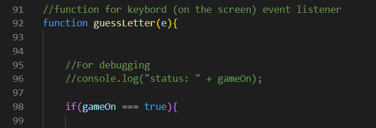

Purpose:
The focus of this project was building a game that allows the user to guess words.
Development Process:
The HTML in this project is very simple, as I was mostly focused on adding functionality in JavaScript. Such us: lives count, game status, word generation, creation of letter elements.
Game status:
Game status is implemented by using a Boolean value to check if the user has reached the end of the game (game over or win). To do that I added a general if statement in the keyboard event listener:
Inside this if statement is a nested if-else statement which tracks the correct and wrong guesses. If the letter is guessed correctly the guessed counter number goes up, constantly comparing it to the length of the word. Otherwise, if the letter was guessed wrongly the mistakes count number goes up. If any of those numbers reaches its maximum, the game ends and the Boolean value gets updated.
Letter Elements:
Letter Elements was something that I found challenging to implement, as the right number of letter elements had to be created and the guessed letters had to appear in the right “box”. Furthermore, what needed more attention is displaying letters that appear twice.
Issues & Future Changes:
There is one aspect of this game that requires connection to backend. In the code on GitHub and the developer tools it is possible to see the array containing the words which the user has to guess. Therefor for future improvement og this game it would require a database, that will contain those words. A possible way to implement that is by using a layered software architecture pattern. Furthermore to improve the gameplay, it is possible to add hints for the player. For that once again it would be beneficial to implement a database that has words stored in different categories. The name of the word’s category can serve as a hint for the player. Another minor improvement is necessary for a better user experience. Whenever the guessed letter is displayed the container displaying that letter either shrinks or grows to contain it.